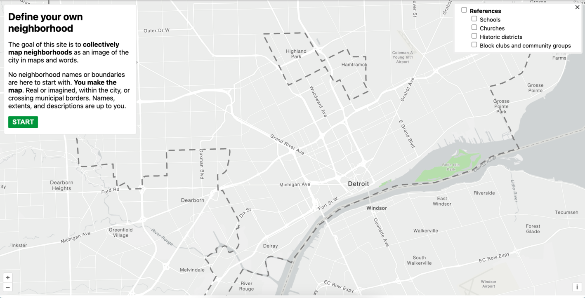
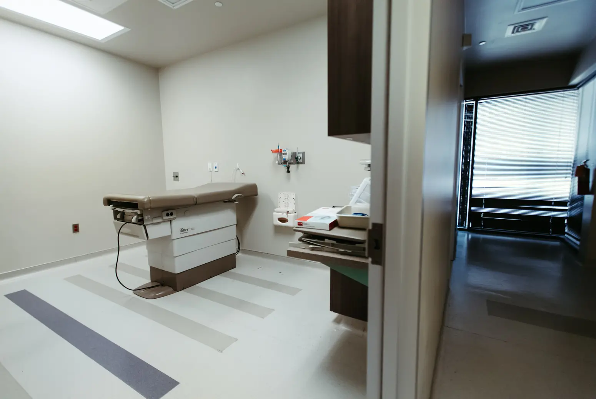
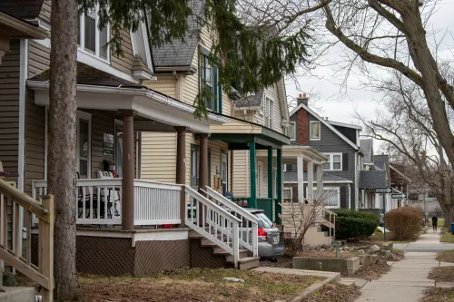
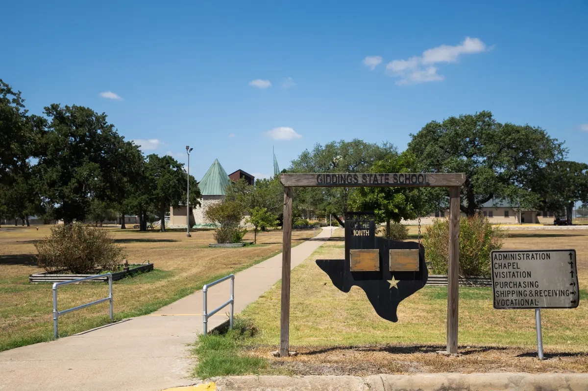
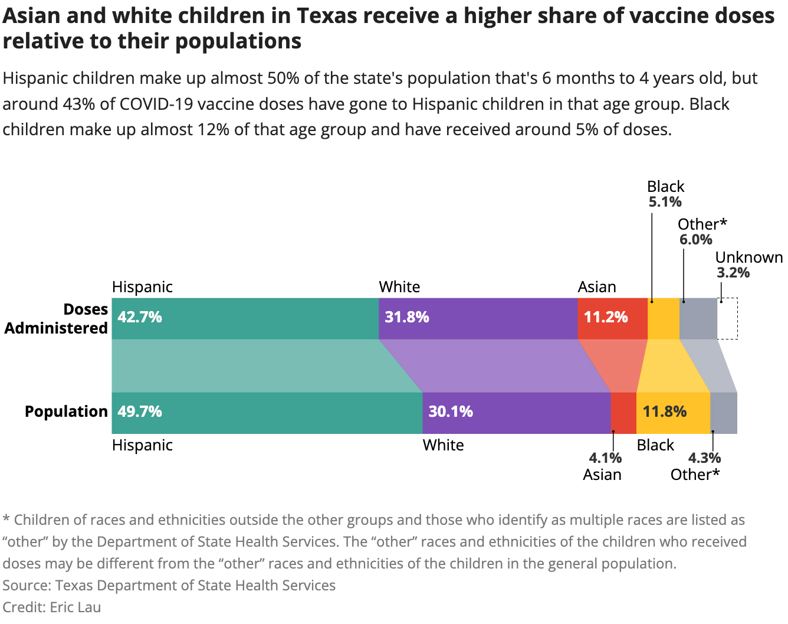
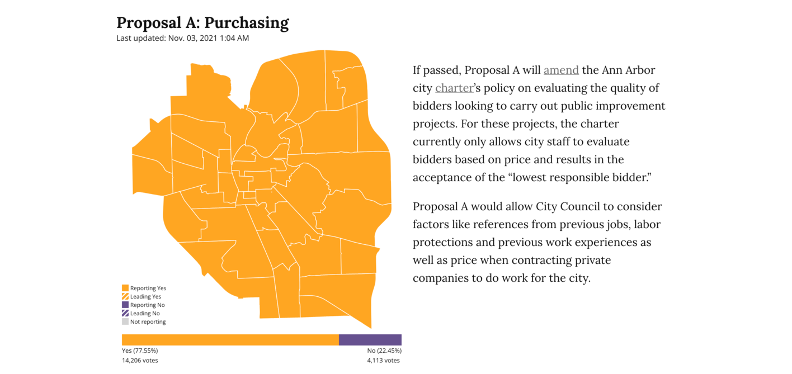

Hello! My name is Eric Lau.
I am the incoming summer 2024 Washington Post Graphics intern.
I previously led the engineering and data journalism teams at The Michigan Daily.
I've worked as a data journalist and software engineer at The San Francisco Standard and The Texas Tribune.
I study computer science and digital studies at the University of Michigan.
twitter, github, linkedin, résumé ericlau at umich dot eduWeb development and design
-

The Michigan Daily Crosswords
The Michigan Daily
Created infrastructure to publish and play crosswords. Coordinating team to continue development. Built with SvelteKit and SQLite. -

The Fable of the Lion, the Butcher, and Three Kings
The Michigan Daily, 2023
Designed and developed poem layout. Built with Svelte, Scrollama and Mapbox. -
Writing in the Digital Dark Age
The Michigan Daily, 2023
Designed and developed story layout. Collaborated and prototyped visual elements with the writer. -

Love Notes 2022 Edition
The Michigan Daily, 2022
Designed and developed a website displaying student love notes as cassette tapes. Built using Svelte. -

MiC Style
The Michigan Daily, 2023
Developed a Michigan in Color website to showcase fashion and clothing from people of color. Built with Next. -

Black Hair Series
The Michigan Daily, 2023
Developed a Michigan in Color website featuring photography, video and interviews on Black hair. Built with Svelte. -

2022 Photographers' Favorites
The Michigan Daily, 2022
Designed and developed a multimedia article showcasing Daily photographers' favorite photos from 2022. Built with Scrollama. -
 Detroit neighborhoods mapping tool
DETROITography, 2023
Designed and developed an application to crowdsource Detroit neighborhood boundaries. Built with SvelteKit, OpenLayers and PostGIS.


Data journalism
-
 Abortion should be permitted in cases of rape and incest, around 80% of Texas voters say in UT poll
The Texas Tribune, 2022
Wrote a story on abortion public opinion. Interviewed several pollsters. Gathered historical polling data and built visualizations with Datawrapper. -
Here's how much Greg Abbott and Beto O'Rourke have raised in the race for Texas governor
The Texas Tribune, 2022
Created several data visualizations with Datawrapper to showcase gubernatorial fundraising. -
 Massive power outage in Ann Arbor leaves thousands in the dark
The Michigan Daily, 2023
Built a tracker based on internal DTE APIs to retrieve power outage data. Created live-updating visualizations with D3 and Datawrapper. -
 Almost 600 Texas youths are trapped in a juvenile prison system on the brink of collapse
The Texas Tribune, 2022
Collaborated with Jolie McCullough to analyze and visualize data on the Texas juvenile prison system. Used Datawrapper and Observable. -
UMich Class of 2025: By the numbers and their hopes for college
The Michigan Daily, 2021
Created data visuals conveying results from The Michigan Daily Class of 2025 survey. Built with D3 and Scrollama. -

West Texas farmers and ranchers fear the worst as drought, heat near 2011 records
The Texas Tribune, 2022
Created small multiple maps of Texas showing drought severity over time. Built with Illustrator. -

Daily analysis finds historically large salary disparities between three U-M campuses
The Michigan Daily, 2021
Created data visuals and analyzed University salary and budget records. Used Python and D3. Collaborated with editors and reporters to write stories. -

More than 100 Ann Arbor restaurants closed in the past three years
The Michigan Daily, 2021
Created a map showing the status of Ann Arbor restaurants. Proxied restaurant status via inspection data. Built with QGIS and Adobe Illustrator. -

We looked at the 301 high schools with the most applicants to U-M. Here's what we found
The Michigan Daily, 2021
Created data visuals and analyzed FOIA request data on university feeder high schools. Used Python and D3. -
 Familiar racial disparities emerge in first month of COVID-19 vaccinations for the youngest Texans
The Texas Tribune, 2022
Created a data graphic in Illustrator on vaccination rates among Texas children. Contributed to data-heavy writing. -
 City of Ann Arbor 2021 Special Election Results
The Michigan Daily, 2021
Created a tracker in Python to retrieve live election results. Built a page to show results in Svelte.